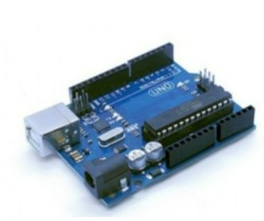
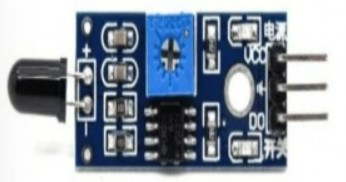
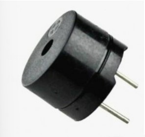
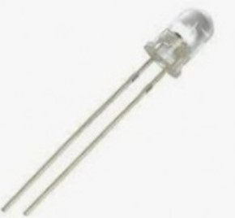
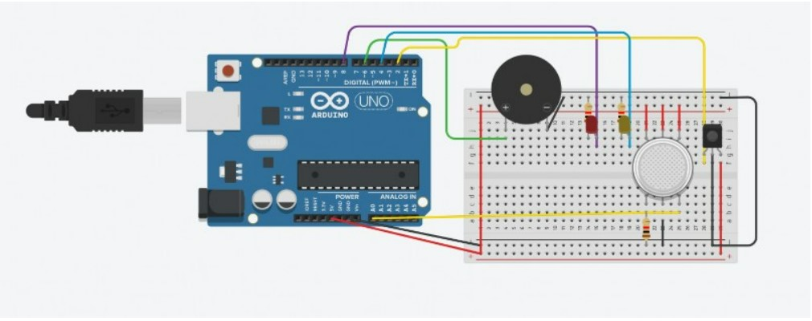
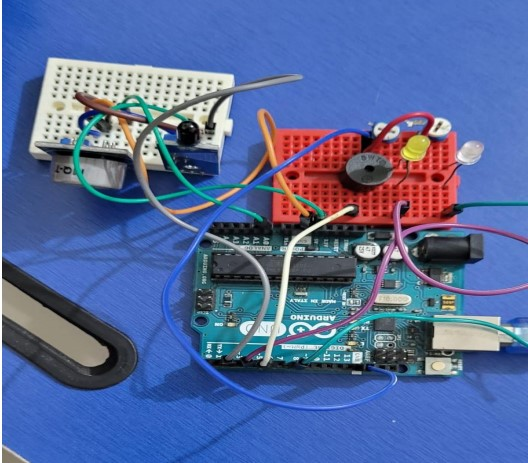
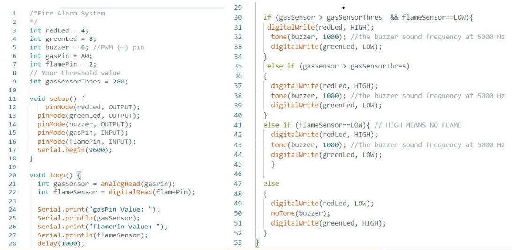

FIRE DETECTION SYSTEM
DEVICES PROJECT
PRESENTED BY: SHREEYA KAMAT (21ECE1034)
PARAS KORE (21ECE1024)
ABSTRACT
Recently there have been a number of cases wherein fire has caused significant damage to properties and might be responsible for the loss of people's lives if not given proper attention. Through this project, we would like to address the issue by designing a fire alarm system which alerts the person in service about the fire so they can take prompt action about it, since in most cases the fire department gets informed after the fire has reached a level where it becomes difficult for them to bring it down or hinders the process of rescuing the occupants of the building who might be stuck inside the building. This system can also be used in godowns, which might help minimise the loss due to the burning away of material stored in the godown.
COMPONENTS USED
ARDUINO UNO

FLAME SENSOR  COMPONENTS USED PIEZOELECTRIC BUZZER

LED
 CIRCUIT DIAGRAM
 ACTUAL CIRCUIT
CONNECTIONS
 Make
the connections in the circuit as shown in the circuit diagram. Connect the
Vcc pin of the flame sensor and the gas sensor to the 5V of the Arduino. Connect the
ground to ground of the Arduino and digital out pin of the flame sensor to the D2 of the Arduino. Connect the
ground to the ground analog output pin of the gas sensor to A0 of the Arduino. Connect the pc to the Arduino and upload the program.

Features of
the Sensor Compact Circuit. Low
power Consumption.
Can Connect a modem module to the circuit and alert the nearest fire station about it. RESULT AND FURTHER
IMPROVEMENTS The
current detector we have prepared is a prototype of the circuit that can be used for detecting fire effectively.
The range of the detector we have designed and implemented is about 2-3cm. The range of detector can be further
improved by increasing the working range of the flame detector made use of in the circuit. We can incorporate
this circuit on a rover which can be used in case of mine collapse to detect the fires inside, which will help
in saving the rescuers life.
PROCEDURE
ARDUINO CODE